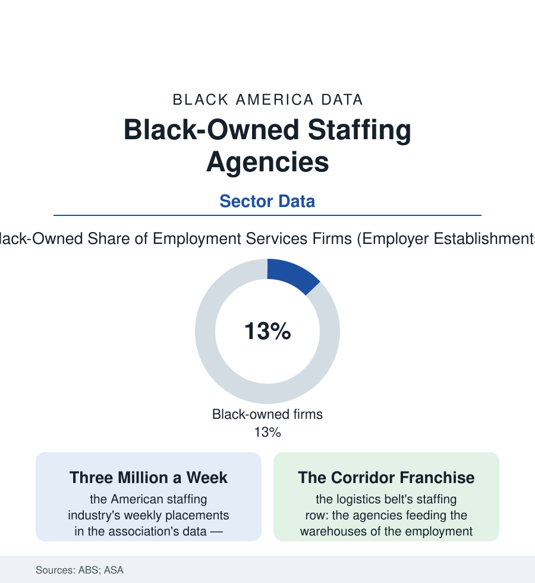

Black Business
The Staffing Agency: Selling the Bridge Between Workers and Work
Staffing is the business of the match — and Black-owned agencies hold a distinctive franchise in the warehouses, hospitals, and offices of their own communities. The staffing file.

Every economy runs a second labor market beside the first: the temporary, the contract, the tryout — some three million workers a week placed by staffing agencies in the industry's data, a workforce disproportionately Black. The firms doing the placing include a substantial Black-owned tier, roughly an eighth of the sector's employer firms in the business survey, whose market position is one of this section's most instructive. This article reads the staffing file.
The Business of the Match
The staffing firm's economics are elegant on paper (the bill rate against the pay rate, the spread paying for the recruiting, the insurance, and the float of weekly payrolls against monthly invoices — a working-capital business disguised as a people business, its failures cash-flow failures in the trade data's autopsy) and its assets are relationships at both ends: the client companies whose orders arrive Monday for Tuesday, and the workforce that answers. The Black-owned agency's distinctive position in that market is the two files it serves simultaneously: the corporate client (whose supplier-diversity commitments of the contracting file make the certified minority staffing firm a procurement answer, the health systems and logistics giants of the atlas awarding master contracts that a generation of Black staffing entrepreneurs built practices upon) and the community workforce (the recruiters' credibility in the neighborhoods the national chains advertise into from a call center — the church announcement, the reentry program's referral, the cousin network, sourcing the workers the employment file counts as discouraged back onto a payroll). The industry's tiers map to the atlas's sectors with satisfying completeness: the light-industrial agencies of the warehouse corridors (the fulfillment file's shadow employers, their vans and check-in desks the buildings' true front doors), the healthcare staffing houses (the travel-nurse economy's agencies, Black-owned among them, riding the workforce shortage's premium rates), the professional and IT firms of the contracting shelf, and the day-labor fringe where the industry's labor standards are written in citations. The wage data complete the structure: the temp premium's absence (the staffed worker earning less than the direct hire beside her in the contingent-work supplements), the temp-to-perm conversion as the system's stated purpose and measured minority of outcomes.
The Gatekeeper's Dilemma
The file's critical literature is the industry's own: the staffing agency as gatekeeper stands accused in the research of both opening and filtering — the same firm that gives the returning citizen and the employment-gapped mother their first payroll in years also operates the client's screens (the background checks, the drug panels, the credit reviews whose disparate filtering the audit studies attribute in part to the agency layer's risk-aversion on the client's behalf), and the algorithmic turn has industrialized both faces (the platform staffing apps of the gig file dispatching by rating systems whose bias audits are the new literature). The Black-owned firms sit inside the dilemma with the least room and the most knowledge: their advocacy literature argues, with their placement data as evidence, that proximity is the corrective — the recruiter who knows the neighborhood reads the 'job gap' as a caregiving season, the record as an old chapter, the unreliable car as a bus-route problem to be solved with a shift change rather than a rejection — the match made on information the screen discards. The policy rows are arriving on schedule (the temp-worker protection statutes of the recent state sessions — disclosure of assignments, conversion rights, the Illinois and New Jersey laws named for the workers themselves — repricing the industry's practices from the worker's side for the first time in its modern history). The census counts the firms at their desks. The Monday-morning line outside the agency door — the week's true economic indicator for the neighborhoods of this atlas — is the statistic the survey drives past.
Reading the Staffing Data
An eighth of the matchmaking industry, positioned between the corporations that need the workers and the communities that are the workers: the staffing file is the business section's study in intermediation — a business whose product is trust, sold in both directions at once. Its numbers understate nothing except the 6 a.m. parking lot, where the week's economy is actually allocated.
More in Black Business
Black-Owned Businesses: Counts, Receipts, and the Representation Gap
About 161,000 Black-owned employer firms and three million solo ventures: how the Census Bureau counts Black business ownership, where firms concentrate, and the gap between population share and business share.
Black Median Net Worth: The Wealth Gap in Federal Reserve Data
The Federal Reserve puts Black median family net worth at $44,900, against $285,000 for White families — about 16 cents on the dollar. The widest gap in economic data.
Black Buying Power: The $1.8 Trillion Consumer Economy
Black buying power is estimated at about $1.8 trillion — larger than the economy of most nations. What the figure measures, who produces it, and what it buys.
Source: U.S. Census Bureau Annual Business Survey; American Staffing Association industry data; U.S. Bureau of Labor Statistics contingent worker data.